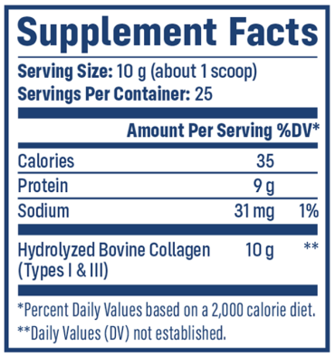

During our Stock Up and Save Sale, you can get FREE jars of NativePath Grass-Fed Collagen with this EXCLUSIVE BOGO offer available on social media ONLY! That’s up to 75 DAYS of FREE Collagen!
Each serving is formulated with 10 grams of the highest-quality grass-fed collagen shown to:
Our warehouse is OVERFLOWING with premium NativePath Grass-Fed Collagen – take advantage now before this rare opportunity disappears!
For a limited time, we're offering our unprecedented "Buy 3 Get 3 FREE" package to help clear our spring surplus inventory.
Why is this so unusual? Because our premium Type I & III collagen—sourced exclusively from pasture-raised cattle—typically faces supply shortages due to its exceptional quality and high demand.
But right now, you can:
Our longtime customers know that once they start experiencing the remarkable improvements in how they look, feel, and move, they never want to run out. That's why they're taking advantage of this rare surplus to stock up now.
Why act today? This overstocked situation won't last. Once our warehouse returns to normal levels, we'll return to our standard pricing—and we may face the usual supply constraints that have disappointed customers in the past.
Secure your 6-month supply now while our warehouse needs clearing and protect yourself from future shortages that leave others waiting.
Choose the "Buy 3 Get 3 FREE" package below for maximum savings!

Our new handheld frother whips up creamy, delightfully frothy collagen drinks like coffee, lattes, matcha, and more in just seconds. It’s fast, requires minimal cleanup, and includes a stand for easy use and neat storage.
Your frother ($24.95 retail) will instantly be added to your order for FREE when you choose our 2 or 3 jar package of collagen.
During this personalized session, you'll discover how to maximize your collagen benefits, create the perfect supplementation schedule for your specific needs, and get all your questions answered by a nutrition expert. This exclusive opportunity is only available on select bundles at absolutely no cost to you. We're committed to your success and can't wait to help you achieve the best possible results with NativePath Grass-Fed Collagen.
Collagen is the most abundant protein in your body, often called the "glue" that holds us together.
It's a crucial building block for your bones, joints, muscles, tendons, and ligaments, as well as your skin, hair and nails.
Think of collagen as the framework that gives your body structure and support.
As we age, our natural collagen production slows down, which can lead to wrinkles, joint pain, and weaker bones.
Long ago, the human diet consisted of collagen-rich foods – which helped offset our decline in collagen production.
Today, however, our modern diets lack collagen.
Therefore our bodies are losing collagen faster than we can replace it.
Starting around the mid-twenties, our collagen levels can decline by 1.5% per year.
As a result, the skin's elasticity declines, wrinkles form and joints and bones weaken, causing nagging aches and pains.
This is especially true for women, as a dramatic reduction in collagen occurs after menopause.
In fact, 50% of your natural collagen will be gone by age 60.
The visible and physical signs of aging in your skin, hair, and nails and the creaking and popping in your joints may have less to do with “getting older”... and more to do with being deficient in collagen.
But here’s the good news with collagen:
It’s restorable.
Better yet, you won’t have to slow-boil grass-fed bones, marrow, cartilage, and organs to do so.
Every scoop of NativePath Grass-Fed Collagen is formulated with 10 grams of the highest-quality grass-fed collagen from happy, healthy cattle.
It consists of type I and type III fibers, which make up over 90% of the collagen in your body. These fiber types are the most important for healthy joints, bones, skin, hair, nails, and more.
That’s why you’ll only find collagen types I and III in NativePath Grass-Fed Collagen.
NativePath Grass-Fed Collagen is also hydrolyzed, meaning it has been broken down into small peptides that digest easily and mix well in hot or cold beverages.
The powder is flavorless and undetectable in coffee, tea, smoothies, and more – making it a seamless addition to your everyday routine.
By now it’s clear that supplementing with NativePath Grass-Fed Collagen provides a convenient workaround for overcoming the inevitable age-related decline.
And since collagen loss begins around the age of 30, experts strongly stress that it’s important to start replacing as soon as possible.
But how you supplement is just as important as the quality of the collagen.
Therefore when it comes to replenishing collagen levels, it is important to replace it correctly to get the full benefits. Otherwise, it's just a waste of time and money.
For the past decade, I’ve been providing natural solutions to address mobility, joint pain, and bone loss.
Because most of my clients are over 60, their collagen levels are already significantly depleted.
Therefore, to compensate for the collagen loss, I recommend an initial collagen loading phase to build collagen back up to baseline.
To get the most out of collagen supplements, your body needs a good base of collagen to start with. Collagen loading provides this base for maximum benefits.
To begin collagen loading, take 2 scoops (20 grams) of NativePath Grass-Fed Collagen per day for at least 60-90 days.
Since NativePath Grass-Fed Collagen is unflavored, you can add it to practically anything – coffee, tea, smoothies, and more.
Continue taking at least 1 scoop, preferably 2 scoops, daily to maintain healthy joints, bones, skin, hair, nails, and more.
While it is possible to experience some benefits of collagen supplementation with just 1 scoop per day (10 grams), doubling your daily dose may help restore an age-related deficit.
Thus, putting you on the fast track to experience the full range of benefits.
You’ve seen firsthand how 2 scoops of NativePath Grass-Fed Collagen per day can provide incredible results.
And you’ve seen the proven science and research behind the many benefits of collagen supplementation.
Every month that you use collagen consistently, more benefits will unfold.
So let me ask you this question…
Are you willing to risk spending your so-called “golden years” trapped in a downward spiral of age-related decline?
Joint pain tends to be the first indication that age-related wear and tear is catching up to you.
These aches and pains can make it hard to perform simple, everyday tasks...
Or engage in your favorite hobbies...
Or worse, your years of independent living without assistance could start to slip away.
However, many older adults have improved their joint and bone health by using the collagen loading technique.
And reduce the aches and pains that come along with age-related wear and tear...
And get their confidence - and their life - back...
After witnessing firsthand just how powerful collagen supplementation can be for people dealing with mobility issues, joint pain, and bone loss…
I began putting all of my time and resources toward one goal and one goal only:
To get collagen into as many hands as possible so that it can help people restore their bodies and their quality of life...
YES, you can take your body and health back into your own hands!
At this point, you may be wondering how you can try NativePath Grass-Fed Collagen yourself...
Along with how much and how often do you need to take it for best results?
At NativePath, our formula contains one single ingredient:
Hydrolyzed collagen from grass-fed cattle.
This is the richest source of type I and III collagen fibers – which make up over 90% of the collagen in our body.
While other collagen brands use cheaper, multi-collagen types, we only use types I and III.
This ensures you’re getting the most potent and pure collagen supplement on the market for healthy joints, bones, skin, hair, nails, and more.
All of our products are as close to nature as possible, which is why you will never find any ultra-processed ingredients like artificial preservatives, colors, or chemical sweeteners.
But there’s just one downside with NativePath Grass-Fed Collagen...
Our meticulous manufacturing process and quality assurance can add weeks (sometimes months) to our operations.
This means it can take a very long time to produce even a single jar of NativePath Grass-Fed Collagen.
On top of that, those who try NativePath Grass-Fed Collagen keep coming back to order more… And at larger quantities, too…
This is a good problem to have, but the large influx of large orders may put even more of a strain on production.
Especially since our premium hydrolyzed collagen formula can take months to produce.
And most of our returning customers purchase our 6-jar package, which is the perfect collagen loading supply and our best deal.
As a result, there’s no guarantee of how long our collagen will be in stock.
Fortunately, our sourcing team was able to secure a large surplus of our premium collagen formula.
With our inventory surplus, we are able to make our collagen more affordable than ever before.
This is incredible news because I believe collagen should be a daily staple in our diet.
The reason is simple: it’s the most important building block for healthy joints, bones, skin, hair, nails and more.
Yet, our modern diet lacks collagen.
That’s why I believe everyone should prioritize adding collagen back into their diet – especially people over 50 who are collagen deficient.
So how much collagen do you really need?
According to research, 10-20 grams of collagen per day can support healthy joints, bones, skin, hair, nails, and more.
As you know, our bodies have less collagen than they did in our twenties.
It's like as we age, our collagen tank starts running low.
For people over 50, I suggest taking more collagen to fill up that tank.
This is called collagen loading.
Instead of one scoop a day, try two scoops.
Taking 2 scoops of collagen daily helps replace what you've lost over the years.
It's like giving your body extra building blocks to strengthen itself inside and out.
Studies show that collagen needs to be taken every day for at least 2 to 12+ months to see the best results.
Many people find it helpful to continue taking this larger amount for a long time.
This is why most people buy 6 jars of NativePath Grass-Fed Collagen at once.
In order to see the full benefits, you need to take collagen every day, month after month.
Remember, you need to take collagen every day in order for it to make a difference.
Taking collagen regularly is the best way to help your body stay strong and healthy as you age.
Simply put, collagen is no “miracle supplement”...
In other words, to get the most out of collagen, you need to take enough of it every day.
Collagen works best when you take it regularly without skipping days.
The benefits of collagen compound as weeks and months go by.
But this only works if you are committed to taking it every day.
Consistency is key to unlocking the full benefits of collagen.
Which is why I recommend my clients to:
And there’s never been a better time to secure your supply of NativePath Grass-Fed Collagen than now.
Studies show that taking collagen for 3 or more months offers the greatest benefits, which is why we wanted as many people as possible to be able to stock up on a large supply at an affordable price.
That’s why my NativePath team and I went to great lengths to secure a surplus of grass-fed collagen to provide the best discount we can afford to offer.
Right now, when you stock up on 3 jars of NativePath Grass-Fed Collagen...
You’ll receive 3 more jars for FREE, a FREE Frother, and FREE Shipping as part of our Stock Up and Save Sale!
That's over $150 in savings and 75 FREE servings of Collagen.
At NativePath, we believe in the quality of our products, which is why we offer a 365-Day Money Back Guarantee every time you purchase.
That means you have an entire year to try NativePath Grass-Fed Collagen completely risk-free.
If you are not 100% satisfied, you may return unopened products from your most recent order within 365 days of the day it is delivered to your door. Your free frother is still yours to keep!
Simply call our friendly Customer Care Center toll-free at 1(800) 819-2993 for assistance. Rest assured, you can order with confidence in knowing that your purchase is backed by our risk-free 365-Day Money-Back Guarantee
At NativePath, we believe that vibrant health is your birthright.
Because collagen is important for healthy joints, bones, skin, hair, nails, and more – we want to get it into as many households as possible.
That’s why we’ve made it our mission to make our grass-fed collagen more accessible and affordable than ever.
When you choose our "Buy 3 Get 3 FREE" package, you will not only receive our best BOGO offer ever (3 FREE jars of collagen)...
But you will also receive a FREE Frother and FREE Shipping as our gift to you!
The "Buy 3 Get 3 FREE" package ensures that you’ll have the appropriate amount of collagen needed for daily loading without worrying about running out early.
Taking advantage of our “Stock Up and Save Sale” will give you confidence in knowing you’ve got the ideal supply of collagen handy to experience the full spectrum of health benefits.
You’ve seen the science, you’ve heard about its benefits, you’ve read dozens of testimonials and 5-star reviews…
So now it’s your turn to decide.
Our best value and most popular quantity is our "Buy 3 Get 3 FREE" package, which offers an unbeatable price of just $31 per jar (retails for $37.99 per jar).
Plus you’ll receive 3 more jars for FREE, a FREE Frother, and FREE Shipping as part of our Stock Up and Save Sale!
That's over $150 in savings and 75 FREE servings of Collagen.
Each full-size jar of NativePath Grass-Fed Collagen contains 25 servings.
NativePath Grass-Fed Collagen is sourced from pasture-raised cattle in South America.
We are proud to say that our formula contains only one single ingredient: grass-fed collagen.
NativePath Grass-Fed Collagen is manufactured in the USA and contains zero ultra-processed ingredients. That means no artificial preservatives, flavors, dyes, sugar, seed oils, gluten, or GMOs.
Based on feedback from our customers, 10 to 20 grams (or more) of collagen per day can provide the greatest age-defying joint, bone, skin, hair, and nail benefits.
We recommend taking at least 20 grams (2 scoops) daily for maximum results.
This might be especially helpful for people over the age of 50, whose collagen levels may have already declined by a staggering 50% (or more).
Taking multiple scoops per day may help restore your collagen deficit so that full results can be achieved.
Since NativePath Grass-Fed Collagen has no taste or odor, adding multiple scoops to your diet has never been easier. Simply add NativePath Grass-Fed Collagen to your coffee or tea, smoothie, juice, or unsweetened almond milk, or even add it to your yogurt, oatmeal, soup, or baked goods.
The easiest way to use NativePath Grass-Fed Collagen is to mix a serving into 8-12 oz of any hot or cold beverage and gently stir.
Many of our customers notice results as early as their first week with NativePath Grass-Fed Collagen.
However, more profound results are reported with regular prolonged use. This is why we recommend stocking up with the 6-jar package so that you can experience the full benefits of long-term collagen use without the risk of running out.
Collagen is the most abundant protein in your body, accounting for about a third of its protein composition. It's one of the major building blocks of joints, bones, skin, hair, nails, muscles, tendons, and ligaments. Collagen is also found in many other body parts, including our gut lining, blood vessels, corneas, and teeth.
While our bodies are fully equipped to produce collagen naturally, once we hit our twenties, it begins to decline by 1-1.5% per year.
In fact, one study looked at type I collagen in the skin of old individuals versus young folks and found that collagen synthesis was decreased by 68% in old skin versus young skin*.
If you’ve ever wondered why our skin begins to sag and wrinkle as we get older – it’s likely that low collagen levels are behind it.
This is because as you age, your body produces less collagen. The effects, such as achy joints, bone loss, wrinkled skin, and brittle nails, may become noticeable after several years.
Fortunately, research has shown that by adding a high-quality collagen supplement to your diet, you can provide your joints, bones, hair, skin, and nails with the support required to promote vibrant health at any age.
You can expect to receive your order within 7-10 business days.
The only ingredient in NativePath Grass-Fed Collagen is hydrolyzed bovine collagen.
Yes, we are 100% committed to ensuring that your information is safe and secure. To prevent security holes, we have put in place suitable physical, electronic, and managerial procedures to safeguard and secure your shopping experience so that you can order with confidence.
Many of our customers begin to see and feel a difference shortly after adding NativePath Grass-Fed Collagen into their diets. However, we want to make sure there’s absolutely no risk involved when it comes to investing in any of our NativePath products. If you don’t feel the difference or if you are not 100% satisfied for any reason, you may return unopened products from your most recent order to us within 365 days of the day they are delivered to your door. You can also keep your FREE frother. Simply call our friendly Customer Care Center toll-free at 1(800) 819-2993 for assistance.
Our Stock Up and Save Sale will ONLY be available through the holiday season.
So, if you’re even slightly curious about what NativePath Grass-Fed Collagen can do for you, this is your chance to stock up at our lowest available price.
If you’re ready to experience the results that thousands of other people have been raving about, act now.
Simply click the button below.